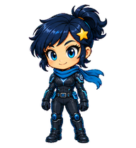
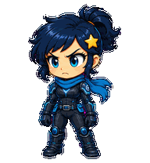

Tiny Nova.
Same sass.
A little companion for your big ideas. She waves, works, waits, hops—and facepalms when the universe earns it.

The install button opens your desktop app. Complete its install flow, then choose Nova in Settings → Pets.

Prefer the portable package?
Download the ZIP, extract it, and copy the nova folder into your Codex pets directory.
Windows: %USERPROFILE%\.codex\pets
macOS: ~/.codex/pets
If you use CODEX_HOME, use its pets folder instead. Keep a backup if you already have a pet named Nova.
Open Settings → Pets → Refresh and choose Nova. To show her, enter /pet or use Show pet.
If Install Nova does nothing, use the ZIP. This package uses the desktop v2 format.

A whole tiny repertoire.
Nine animations, sixteen gaze directions, and one spectacularly expressive facepalm. Four intermediate diagonal cues are subtle. Pet preferences respect your system's reduced-motion setting.